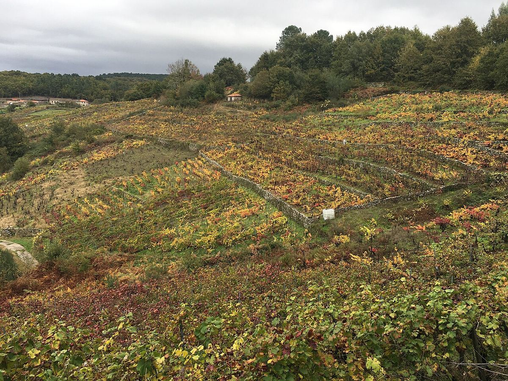

ROSSO
Ribeira Sacra, nell'entroterra della Galizia, è una denominazione di origine riconosciuta nel 1996, famosa per i vigneti terrazzati sopra i canyon del Miño e del Sil. Il suo vitigno principale è il Mencía.

Il nome Ribeira Sacra allude alla grande concentrazione di monasteri ed eremi sorti lungo le rive del Miño e del Sil nel Medioevo, tra cui quello di Santo Estevo de Ribas de Sil. La tradizione fa risalire all'epoca romana l'inizio della coltivazione della vite su questi pendii, e furono poi le comunità monastiche a sviluppare la viticoltura sui terrazzamenti. Dopo un lungo periodo di declino e di abbandono delle parcelle, la zona fu riconosciuta come Denominazione di origine nel 1996, il che contribuì al recupero di molti vigneti.
La denominazione si estende nel sud della provincia di Lugo e nel nord di quella di Ourense, lungo i fiumi Miño, Sil e Bibei. Comprende cinque sottozone: Amandi, Chantada, Quiroga-Bibei, Ribeiras do Miño e Ribeiras do Sil. Le condizioni variano secondo l'esposizione e l'altitudine dei versanti.
Il clima unisce l'influenza atlantica a tratti continentali. Sul fondo dei canyon le temperature estive possono essere elevate e i versanti esposti a sud ricevono molto sole, mentre le piogge sono moderate rispetto alla costa galiziana. I suoli sono poco profondi e prevalentemente di ardesia e granito, spesso su pendii molto ripidi. I versanti esposti a sud, come molti del canyon del Sil, sono i più apprezzati, perché consentono una maturazione completa in un ambiente per il resto fresco. Sono inoltre frequenti le vecchie viti, spesso con varietà diverse mescolate nella stessa parcella.
Gran parte dei vigneti è coltivata su strette terrazze in pietra, chiamate socalcos, che scendono verso i fiumi con dislivelli talvolta estremi. Il lavoro è quasi interamente manuale e in alcune zone l'uva viene trasportata con piccoli mezzi su rotaia o persino in barca. Per questo si parla di viticoltura eroica, un'espressione che riassume lo sforzo umano necessario a mantenere questo paesaggio.
Il Mencía è il vitigno dominante e dà rossi dal colore vivace, aromi di frutta rossa e nera, note floreali e minerali e un'acidità fresca. Lo affiancano varietà rosse locali come Brancellao, Merenzao, Sousón e Caíño, oltre alla Garnacha Tintorera. Tra i bianchi si coltivano Godello, Albariño, Treixadura, Loureira, Doña Blanca e Torrontés. La maggior parte della produzione è costituita da rossi giovani, ma sono sempre più numerosi i vini da singola parcella e affinati in legno, così come i bianchi di Godello.